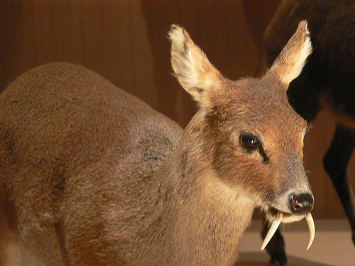
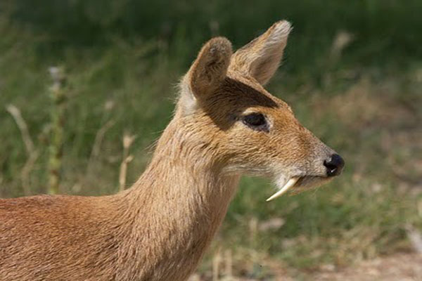
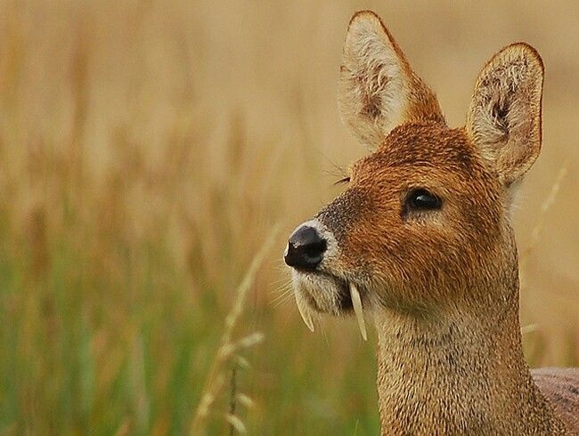
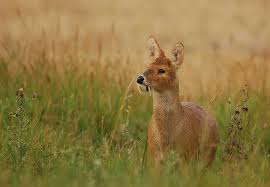
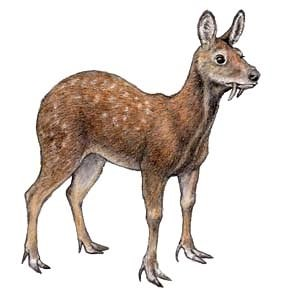
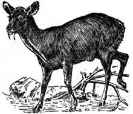

What is the Kashmir Musk Deer?
The Moschus Cupreus, more commonly known as the Kashmir Musk Deer, is an endangered species native in India, Pakistan, and Afghanistan. They are most known for their sharp teeth, earning them the nickname “vampire deer”. Standing at about 2 feet tall, these mammals are herbivores, eating mostly grass and other kinds of plants.
Why is the Kasmir Musk Deer Extinct?
Unfortunately, the Kashmir Musk Deer is extremely endangered in India and Pakistan, and rarely scientifically reported in Afghanistan. These deer are hunted for their musk, or latsi, which are extremely valuable. The Kashmir Musk Deer has also had many instances of habitat destruction when woods that they take shelter in are destroyed and used for their trees.
    What Can We Do to Help Them?
Although there are not many measures to keep the Kashmir Musk Deer from becoming extinct, there are a variety of studies performed on the species to learn more about the species and how we can help them. One study in Nepal, (Case #10051480) concluded that things like firewood collection and timber harvesting did not affect the deer in a positive way. They concluded that in order to conserve the Kashmir Musk Deer, human and cattle activities should be reduced in the areas where the Kashmir Musk Deer live. We must encourage people living in the areas with the Kashmir Musk deer to take the necessary measures to keep their habitats a safe and liveable place for them, as well as encourage hunters and poachers to not kill the Kashmir Musk Deer.